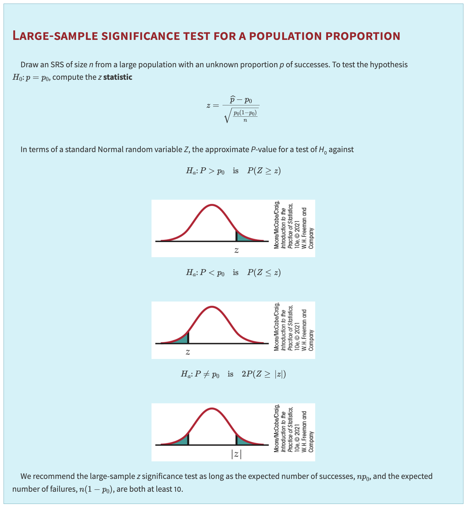

15. Inference for a Single Proportion#
Textbook reference
This chapter corresponds to Chapter 8 of Introduction to the Practice of Statistics (Moore, McCabe & Craig, 10th ed.). Note that the course chapter numbers (shown in the sidebar) follow our teaching order, which differs from the textbook order.
Learning objectives
After this chapter, you will be able to:
Explain why a sample proportion \(\hat{p}\) is just a sample mean of 0/1 data, so the machinery for means (CLT, standard errors, z-procedures) applies for free.
Construct and interpret a large-sample confidence interval for a proportion \(p\) — and explain exactly where a poll’s “margin of error \(\pm 3\) points” comes from.
Carry out the z test for \(H_0: p = p_0\), using \(p_0\) (not \(\hat{p}\)) in the standard error, and check the conditions \(np_0 \ge 10\) and \(n(1-p_0) \ge 10\).
Choose the sample size \(n\) needed to guarantee a desired margin of error, including the worst-case choice \(p^* = 0.5\).
Recognize when the normal approximation is unreliable and name the alternatives (exact binomial, plus-four, Wilson).
Key concepts at a glance
A proportion is a mean of 0/1 data · Point estimation · Confidence intervals · Hypothesis testing · Sample size for a desired margin of error · Putting it all together
Where are we? A question before we start
The simplest data of all: one yes/no question. A poll reports that 54% of 1,000 voters support the policy, with the fine print “margin of error \(\pm 3\) percentage points.” Where does that \(\pm 3\) come from? By the end of this chapter that fine print will be your formula — the familiar recipe \(\text{statistic} \pm z^* \cdot SE\), once we know the standard error of a proportion. This chapter also closes a loop opened long ago: the loaded-die suspicion from the intro page and the “statistic estimates parameter” story from Chapter 2 finally meet the full inference machinery.
We can view Inference for a Sample Proportion as a Special Case of Inference for a Sample Mean. Below is a step-by-step comparison showing how inference for a sample proportion can be viewed as a special case of inference for a sample mean, along with the corresponding assumptions. We will walk through estimation, confidence intervals, hypothesis testing, and sample size determination.
15.1. Why Is a Sample Proportion a Special Case of a Sample Mean?#
A question before this section
Roll a die 120 times and write down, for each roll, a 1 if it shows a six and a 0 otherwise. Now average those 120 numbers. What did you just compute? The proportion of sixes — but you computed it by taking a mean. That is the whole secret of this chapter: a proportion is secretly a mean of 0/1 data, so everything Chapter 5 built for sample means — the sampling distribution, the standard error, the CLT — applies for free. We only need to work out what \(\sigma\) is for 0/1 data.
Sample Proportion \(\hat{p}\) arises naturally when each observation \(X_i\) is a Bernoulli random variable (1 = “success” or 0 = “failure”) with probability \(p\).
Mathematically, if \(X_i \sim \mathrm{Bernoulli}(p)\), then
Notice that \(\hat{p}\) is simply the sample mean of \(\{\,X_i\}\). Hence, the usual formulas for a mean (variance, confidence intervals, test statistics) have analogues for proportions, substituting the Bernoulli variance \(p(1-p)\).
Example: die rolls become 0/1 data
Suppose a die is rolled \(n = 120\) times and shows a six 32 times. Encode each roll as a Bernoulli observation: \(X_i = 1\) if roll \(i\) is a six, \(X_i = 0\) otherwise. Then
\(\hat{p} = \dfrac{1}{120}(X_1 + X_2 + \cdots + X_{120}) = \dfrac{32}{120} \approx 0.267.\)
The number \(0.267\) is simultaneously (a) the proportion of sixes and (b) the sample mean of 120 zeros and ones — the same number, two names. If the die is fair, the parameter is \(p = 1/6 \approx 0.167\); whether \(0.267\) is “too far” from \(0.167\) to blame on chance is exactly the hypothesis-testing question we settle later in this chapter.
15.2. Parameter of Interest#
15.2.1. General Case (Sample Mean)#
Parameter of interest: Population mean \(\mu\).
Each observation \(Y_i\) has mean \(\mu\) and variance \(\sigma^2\).
The sample mean is \(\bar{Y} = \frac{1}{n}\sum_{i=1}^n Y_i\).
15.2.2. Special Case (Sample Proportion)#
Parameter of interest: True success probability \(p\).
Observations \(X_i \in \{0,1\}\) with \(E[X_i] = p\) and \(\mathrm{Var}(X_i) = p(1-p)\).
The sample proportion is \(\hat{p} = \frac{1}{n}\sum_{i=1}^n X_i\).
15.3. Point Estimation#
15.3.1. Estimator#
Sample Mean: \(\bar{Y}\) is the unbiased estimator of \(\mu\).
Sample Proportion: \(\hat{p}\) is the unbiased estimator of \(p\) (equivalently, \(\hat{p} = \bar{X}\) when \(X_i \in \{0,1\}\)).
15.3.2. Variance of the Estimator#
Sample Mean: \(\mathrm{Var}(\bar{Y}) = \sigma^2 / n\).
Sample Proportion: \(\mathrm{Var}(\hat{p}) = \frac{p(1-p)}{n}\).
15.4. Confidence Intervals (CIs)#
15.4.1. Large-Sample (Z-Based) CI for a Mean#
15.4.1.1. General Case#
If \(\sigma\) is known (or \(n\) large, so we approximate \(\sigma\) by \(s\)), a z-interval for \(\mu\) is:
15.4.1.2. Special Case (Proportion)#
For large \(n\), we use the normal approximation for \(\hat{p}\):
This is exactly the same form as the mean’s z-interval, substituting \(p(1-p)\) by \(\hat{p}(1-\hat{p})\). This CI is sometimes called the Wald interval for a proportion.
Example: so THAT’s where “\(\pm 3\) points” comes from
The poll from the chapter opener: \(\hat{p} = 0.54\) support out of \(n = 1{,}000\) voters, at 95% confidence (\(z^* = 1.96\)).
Standard error: \(SE = \sqrt{\dfrac{\hat{p}(1-\hat{p})}{n}} = \sqrt{\dfrac{(0.54)(0.46)}{1000}} \approx 0.0158.\)
Margin of error: \(m = 1.96 \times 0.0158 \approx 0.031\) — about 3.1 percentage points, which news reports round to “\(\pm 3\) points.”
Interval: \(0.54 \pm 0.031\), i.e., roughly \((0.509,\ 0.571)\).
Interpretation: we are 95% confident that between about 50.9% and 57.1% of all voters support the policy. (Conditions: \(n\hat{p} = 540\) and \(n(1-\hat{p}) = 460\) are both far above 10, so the normal approximation is excellent.) The mysterious fine print is nothing but \(z^* \sqrt{\hat{p}(1-\hat{p})/n}\) — and notice that almost every national poll uses \(n \approx 1{,}000\) precisely because that sample size delivers a margin of error near 3 points.
Common misunderstanding
Students often think: “The margin of error accounts for everything that could go wrong with the poll.”
In fact: the margin of error measures sampling variability only — the sample-to-sample chance variation in \(\hat{p}\) from random selection. It says nothing about bias: undercoverage, nonresponse, leading question wording, or respondents lying (Chapter 3’s whole catalog). Those systematic errors are not in the formula, and no margin of error can absorb them.
Quick check: the 1936 Literary Digest poll had \(n = 2.4\) million, so its margin of error was a microscopic \(\pm 0.06\) points — and it missed the election result by about 19 points. Tiny margin of error, catastrophic bias. Which of the two problems does a bigger \(n\) fix? (Only the first.)
15.4.2. Small-Sample (T-Based) CI for a Mean#
15.4.2.1. General Case#
For smaller \(n\), we often use the t-distribution:
where \(s\) is the sample standard deviation of \(Y_i\), assuming the population is (approximately) normal.
15.4.2.2. Proportions#
Typically, we do not use a t-interval for proportions. Instead, for small \(n\), one uses:
Exact binomial confidence intervals, or
Approximate intervals like the Wilson or Agresti-Coull intervals.
For large \(n\), the normal (Wald) approximation is common.
15.4.3. Assumptions for Valid CI#
Mean (General):
Random/independent sample.
For Z-based intervals: either \(\sigma\) known or large \(n\) so that \(\bar{Y}\) is approximately normal by the CLT.
For T-based intervals: data from (approximately) a normal population or \(n\) large enough that T is robust.
Proportion (Bernoulli):
Random/independent Bernoulli trials.
For the Wald (Z) interval, a common rule of thumb: \(n\hat{p}\ge10\) and \(n(1-\hat{p})\ge10\) to ensure a decent normal approximation.
15.5. Hypothesis Testing#
A question before this section
Back on the very first page of this course, we met a suspicious die: roll it enough times and the sixes just don’t look right. Back then, all we could do was eyeball it — “a hundred rolls and no six feels impossible.” Now we own the full toolkit: a null hypothesis (\(p = 1/6\), the die is fair), a test statistic, and a P-value that says precisely how surprising the data are if the die is honest. The loaded-die question from Chapter 0 is about to be answered properly.
15.5.1. General Framework#
A hypothesis test typically has:
where \(\theta\) could be \(\mu\) (mean) or \(p\) (proportion).
15.5.2. Z-Test (Large Samples) for a Mean#
Null Hypothesis: \(H_0:\mu=\mu_0\).
Test Statistic (if \(\sigma\) known or \(n\) large):
Decision: Reject \(H_0\) if \(|Z|\) exceeds \(z_{\alpha/2}\) for a two-sided test at level \(\alpha\).
15.5.3. T-Test (Small Samples) for a Mean#
If \(\sigma\) is unknown and \(n\) is not large, we use
with \(df = n - 1\), assuming the population is approximately normal.
15.5.4. Z-Test for a Proportion#
Null Hypothesis: \(H_0: p = p_0\).
Under \(H_0\), the Bernoulli variance is \(p_0(1-p_0)\).
Test Statistic:
Decision: Reject \(H_0\) if \(|Z| > z_{\alpha/2}\) (two-sided), or the relevant critical \(z\) for one-sided tests.
Common misunderstanding
Students often think: “The standard error is always \(\sqrt{\hat{p}(1-\hat{p})/n}\) — that’s what we used for the confidence interval, so use it in the test too.”
In fact: the test statistic above uses \(\sqrt{p_0(1-p_0)/n}\), with the null value \(p_0\), not \(\hat{p}\). Why? A hypothesis test assumes \(H_0\) is true and asks how surprising the data would then be. But if \(p = p_0\), then the true standard deviation of \(\hat{p}\) is exactly \(\sqrt{p_0(1-p_0)/n}\) — no estimation needed, the null hands it to us. The confidence interval has no null value to lean on, so there we must plug in \(\hat{p}\). Same recipe, different information available.
Quick check: in the loaded-die test below (\(p_0 = 1/6\), \(\hat{p} = 0.267\)), the two candidate SEs are \(0.034\) and \(0.040\) — different numbers, so the choice genuinely matters. Which belongs in the test? (The one built from \(1/6\).)
{kind=link}

How to read this figure (one statistic, three P-values)
The box summarizes the entire z test for a proportion in one place. Read it top to bottom:
The setup line states what you must have before starting: an SRS of size \(n\) from a large population with unknown proportion \(p\) of successes, and a null value \(p_0\).
The statistic \(z = \dfrac{\hat{p} - p_0}{\sqrt{p_0(1-p_0)/n}}\) converts the gap between data (\(\hat{p}\)) and hypothesis (\(p_0\)) into standard-error units. Note the \(p_0\) inside the square root — the null hypothesis supplies the SE (see the misunderstanding box above).
The three normal curves correspond to the three possible alternative hypotheses, and the shaded tail is the P-value:
\(H_a: p > p_0\) — shade the area to the right of \(z\) (our loaded-die test uses this one);
\(H_a: p < p_0\) — shade the area to the left of \(z\);
\(H_a: p \neq p_0\) — shade both tails beyond \(|z|\), which doubles the one-tail area.
You choose the alternative from the research question, before seeing the data — never by peeking at which direction \(\hat{p}\) happened to fall.
The same three-curve picture appeared for means in earlier chapters; only the standard error in the denominator has changed. That is the “special case” theme of this chapter in a single figure.
15.5.5. Assumptions for Valid Testing#
Mean:
Independent random sample.
CLT or normality assumption for Z/T procedures.
Proportion:
Independent Bernoulli trials.
Large \(n\) so that \(\hat{p}\) is approximately normal. A rule of thumb: \(n p_0 \ge 10\) and \(n(1 - p_0) \ge 10\) for \(H_0:p=p_0\).
15.6. Putting It All Together: Why Proportions Fit as a Special Case#
A proportion is literally the average of 0/1 outcomes.
All the formulas for means (estimation, standard error, etc.) apply, substituting \(\sigma^2 = p(1-p)\).
The Central Limit Theorem applies to \(\hat{p}\) just as it does to \(\bar{Y}\), enabling Z-based inference for large \(n\).
Key differences: the distribution assumptions (Bernoulli vs. general) and small-sample approaches (exact binomial vs. t-based).
15.7. Determining Required Sample Size for a Desired Margin of Error#
Often, we want to choose \(n\) so that our confidence interval has a specified margin of error \(m\).
15.7.1. For a Population Mean (Large-Sample Z-Interval)#
Assume we know (or estimate) the population standard deviation \(\sigma\). The margin of error for a confidence level \(C\) is
where \(z^*\) is the critical value (e.g., \(1.96\) for 95% confidence). Solving for \(n\):
If \(\sigma\) is unknown, you might use a pilot study or rough guess.
15.7.2. For a Population Proportion#
For a large-sample Z-interval for \(p\), the margin of error is
Before collecting data, we do not know \(\hat{p}\), so we guess a value \(p^*\) and solve
Worst-case scenario: If we want to guarantee \(m\) for any \(p\), set \(p^* = 0.5\) (since \(p(1-p)\) is maximized at 0.5). Then
15.7.3. Practical Notes#
If the actual \(\hat{p}\) differs from \(p^*\), the realized margin of error can be smaller or larger than planned. Using \(p^*=0.5\) ensures \(m\) will not be exceeded.
For means, use a reasonable guess for \(\sigma\) from prior studies or a pilot sample. Overestimating \(\sigma\) yields a slightly larger \(n\), ensuring \(m\) is not too big.
Always check that \(n\hat{p}\) and \(n(1-\hat{p})\) are large enough for the normal approximation. Otherwise, consider alternative (e.g. plus‐four) intervals. The plus‐four interval replaces \(\hat{p}\) with \(\tilde{p} = (X + 2)/(n + 4)\) and uses \(\tilde{p} \pm z^*\sqrt{\tilde{p}(1-\tilde{p})/(n+4)}\).
Example: why is every poll about \(n = 1{,}000\)?
For a worst-case 95% margin of error of \(m = 0.03\) (the famous “\(\pm 3\) points”), set \(p^* = 0.5\):
\(n = \dfrac{1}{4}\left(\dfrac{1.96}{0.03}\right)^2 \approx 1067.1 \;\Longrightarrow\; n = 1068\) (always round up).
So a poll of roughly a thousand people guarantees \(\pm 3\) points no matter what the true \(p\) is — which is why national polls of wildly different questions all land near the same sample size. Note what is absent from the formula: the population size. Polling 1,068 people works equally well for Indiana or for the entire United States.
15.8. Putting It All Together: The Loaded-Die Question#
Let’s run the whole chapter through one problem — the one this course opened with.
You suspect a die is loaded in favor of six. You roll it \(n = 120\) times and observe 32 sixes. Is the die loaded?
Step 0 — Is this a proportion problem or a mean problem? Ask the one diagnostic question: is each observation a yes/no outcome, or a number? Each roll answers “six or not six” — yes/no — so the data are Bernoulli 0/1’s, the parameter is a proportion \(p\), and this chapter’s procedures apply. (If we had instead recorded the face value of each roll and asked whether the average face differs from 3.5, each observation would be a number and we would use the mean procedures of earlier chapters. Same die, different question, different procedure.)
Step 1 — Hypotheses. A fair die shows a six with probability \(1/6\). The suspicion is one-directional (“favors six”), stated before looking at the data:
\(H_0: p = \dfrac{1}{6} \qquad \text{vs.} \qquad H_a: p > \dfrac{1}{6}.\)
Step 2 — Check conditions and compute the test statistic. The rolls are independent trials. Conditions: \(np_0 = 120 \times \frac{1}{6} = 20 \ge 10\) and \(n(1-p_0) = 100 \ge 10\), so the normal approximation is safe. The data give \(\hat{p} = 32/120 \approx 0.267\). Under \(H_0\) the standard error uses \(p_0\) (not \(\hat{p}\) — see the misunderstanding box above):
\(SE_0 = \sqrt{\dfrac{(1/6)(5/6)}{120}} \approx 0.0340, \qquad z = \dfrac{0.267 - 0.167}{0.0340} \approx 2.94.\)
Step 3 — P-value. One-sided, upper tail (the first curve in the figure): \(P(Z \ge 2.94) \approx 0.0016\).
Step 4 — Conclusion in context. If the die were fair, we’d see a sample proportion of sixes this extreme in fewer than 2 out of 1,000 such experiments. That is far below any conventional \(\alpha\) (0.05 or 0.01): reject \(H_0\) — the data give strong evidence that the die is loaded in favor of six.
Back in Chapter 0 we eyeballed “no six in a hundred rolls” and felt something was wrong; now we have the precise machinery: hypotheses stated in advance, a standard error supplied by the null, a z statistic, and a P-value that quantifies exactly how incompatible the data are with fairness. The loop opened on the first page of this course is closed.
The procedure checklist (use this on every inference problem you meet):
Is each observation a yes/no (→ proportion, this chapter) or a number (→ mean, earlier chapters)?
Estimate or test? A confidence interval answers “what values of \(p\) are plausible?”; a test answers “is a specific \(p_0\) plausible?”
Which SE? Interval → \(\sqrt{\hat{p}(1-\hat{p})/n}\); test → \(\sqrt{p_0(1-p_0)/n}\).
Check the counts (\(n\hat{p},\, n(1-\hat{p})\) for intervals; \(np_0,\, n(1-p_0)\) for tests) \(\ge 10\); if they fail, reach for exact binomial or plus-four methods.
State the conclusion about the parameter, in context — never just “reject \(H_0\).”
15.9. Check Your Understanding#
1. A survey asks 400 students “How many hours did you sleep last night?” and separately “Did you sleep at least 8 hours? (yes/no)”. Which procedures apply to each question?
The first response is a number (hours), so inference about its center uses the mean procedures (\(t\) interval, \(t\) test) from earlier chapters. The second response is yes/no, so it is Bernoulli 0/1 data and uses this chapter’s proportion procedures (\(\hat{p}\), the Wald interval, the z test). Same students, same night of sleep — the type of the recorded response, not the topic, determines the procedure.
2. For the loaded-die data (\(\hat{p} = 0.267\), \(n = 120\)), a student computes the test statistic as \(z = (0.267 - 0.167)/\sqrt{(0.267)(0.733)/120} = 2.48\). The arithmetic is correct. What’s wrong?
The standard error. The student plugged \(\hat{p} = 0.267\) into the SE, but a test is conducted assuming \(H_0\) is true, and under \(H_0: p = 1/6\) the standard deviation of \(\hat{p}\) is exactly \(\sqrt{(1/6)(5/6)/120} \approx 0.0340\). The correct statistic is \(z \approx 2.94\), not 2.48. (The \(\hat{p}\)-based SE belongs in the confidence interval, where no null value is available.)
3. Poll A samples \(n = 1{,}000\) voters by random digit dialing; Poll B collects \(n = 250{,}000\) responses from a voluntary online form. Poll B’s reported margin of error is \(\pm 0.2\) points. Which poll do you trust, and why?
Poll A. Margin of error measures only sampling variability, and it is honest only when the sample is (approximately) random. Poll B’s enormous \(n\) makes its sampling variability tiny, but its voluntary-response design invites selection bias that the margin of error does not — and cannot — measure. This is the Literary Digest story again: 2.4 million biased responses lost to 50,000 well-chosen ones. Bias survives any sample size; only good design removes it.